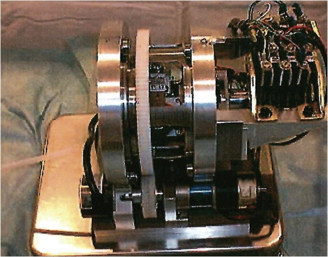

Academic bedside robots · nagoya_negoro2001
Nagoya robot
Nagoya University catheter-driving robots for intravascular neurosurgery (roller and linear-stepping drives) with the EVE patient-specific simulator

1 / 7


- Family
- Academic bedside robots (academic)
- Devices
- catheter (4 Fr, 1.35 mm, in the 2002 tests; arai2002 Sec. 3)
- Degrees of freedom
- 2 (forward/backward and rotation) for the 2002 slave (arai2002 Sec. 2.1)
- Push
- Friction rollers
- Twist
- Rotating clamp
- Tested up to
- Phantom
- Sim-to-real
- None found — No simulation-trained controller found for this robot.
Testing
- Highest level
- Phantom
- What was tested
- in vitro patient-specific membranous silicone cerebral artery models (EVE) (ikeda2006_patientspecific, title-level); clinical use N.R.; 2001 system 'quite large', forward/backward only, not practical (miyachi2025_robotics) 2002 slave: bench only, catheter driven forward, backward and in rotation with the tip in a 5 mm pipe, distance by optical encoder (arai2002 Sec. 3, Figs. 12-18). 2000: in vitro telesurgery, soft plastic tube vessel model under X-ray in the intravascular operating room (tanimoto2000 Sec. 5). 2007: autonomous insertion in silicone block and membranous models of the aortic arch and carotids, speed control and 1-D / 2-D path reconstruction (tercero2007).
- Key numbers
- 2002 slave: brake holding force about 220 gf, adjustable 0-300 gf (arai2002 Sec. 2.2); with the step set to 1 mm the measured step was 0.3-1.9 mm, so the stroke was "not stable" (Sec. 4, Fig. 18); slower than a roller drive (Sec. 2.1). Other papers not read. 2007: catheter speed controlled at 6.14 mm/s; 2-D path reproduced with < 7 mm error (tercero2007 Abstract).
Mechanism
- Push (translation)
- friction-roller (2000-2001 roller feeding; arai2002 Sec. 1: when the vessel's resistance exceeds the pushing force, the roller slips); 2002 linear-stepping slave: two grasping units knocked by voice-coil motors, a brake holds the catheter between strokes (clamp-relay type; arai2002 Sec. 2.2)
- Twist (rotation)
- 2002: a DC motor (Table 1: 12 V, gear ratio 22:1) turns the grasping unit while it holds the catheter (arai2002 Sec. 2.2)
- Device range
- 4 Fr catheter in the tests; step per cycle settable from 1 to 10 mm (arai2002 Sec. 3)
- Target anatomy
- cerebral (intravascular neurosurgery)
Sensing and interface
- Force sensing
- 2002: a micro force sensor at the catheter tip measures the catheter-vessel contact force for force feedback and the brake (arai2002 Sec. 2.3; no force data reported); none in the drive itself (he2018_linear Introduction); photoelastic stress in the phantom used to visualise wall stress (2010, title); 2000 roller slave: strain gauges on thin beams measure push and rotation reaction forces, plus a 1.2 mm x 5 mm tip micro force sensor (resolution 0.5 mN, 2 kHz) displayed together on the master (tanimoto2000 Sec. 3.2-4.1)
- Leader and haptics
- 2002: master joystick with force feedback designed (arai2002 Sec. 2.3, Fig. 10); not evaluated; 2000: 2-DOF force-reflecting master joystick (prismatic + revolute, wire-driven, no gears) with variable-impedance and multi-sensor force display (tanimoto2000 Sec. 3.1, 4)
- Imaging
- 2000: in vitro telesurgery under the X-ray camera of an intravascular operating room, master in the next room (tanimoto2000 Sec. 5, Fig. 11); 2007: NDI Aurora magnetic motion capture (tercero2007)
- Sterility
- 2002: disposable grasping unit and brake contact part (arai2002 Sec. 2.1, 2.2); the earlier roller slave was not suitable for sterilisation (arai2002 Sec. 1)
Size
- Footprint (mm)
- 2002 slave about 300 mm long (arai2002 Sec. 2.3: "about 30cm"); other dimensions N.R.
- Mass (kg)
- N.R.
Simulation
- Simulation model
- physical in vitro simulator (EVE), not a computational model; EVE phantoms are reused by later robot studies (e.g. A2 southeast_jin2024)
- Sim-trained controller
- none found
Versions
- Lineage
- 1996 ICRA networked telesurgery over optical fibre (arai1996_multimedia, doi:10.1109/ROBOT.1996.503883, title via dblp; cited as ref. 1 of tanimoto2000); 2000 MICCAI telesurgery system (tanimoto2000_telesurgery, full): 2-DOF roller slave whose outer shell turns for rotation, inner unit hung on strain-gauge beams (2-axis force), slave 'first designed in 1994' (Fig. 3), wire-driven 2-DOF master joystick (1.6 um, 0.023 deg encoders), 1.2 x 5 mm tip micro force sensor (0.5 mN, 2 kHz), in vitro telesurgery in an intravascular operating room with the doctor 5 m away watching X-ray (Sec. 3, 5); 2001 robotic controlled catheter system with motorized roller feeding (Negoro et al., via miyachi2025_robotics Fig. 1 and text); 2002 linear-stepping slave ('mechanical pencil' mechanism): two grasping units knocked by voice-coil motors, DC-motor rotation of the grasped catheter, voice-coil brake, disposable grasping unit, tip micro force sensor and force-feedback master joystick designed (arai2002_new, full; it replaces the 2000 roller slave, which slipped and was hard to sterilise); 2006 patient-specific neurovascular simulator EVE for evaluating robots (ikeda2006_patientspecific, title); 2007 IJMRCAS autonomous catheter insertion with magnetic motion capture (tercero2007_autonomous, full): the 2002 linear-stepping mechanism rebuilt as a stand-alone unit with a microcontroller, 2 DOF (insert/extract at variable speed, twist in one direction), steered by an NDI Aurora 0.8 x 8 mm coil (Sec. Catheter insertion mechanism, Fig. 2a); 2010 catheter insertion robot with photoelastic stress visualisation (ikeda2010_threedimensional, title)
Sources
- Robotics for Neuroendovascular Therapy · Journal of Neuroendovascular Therapy, 2025 · doi:10.5797/jnet.ra.2024-0112 [miyachi2025_robotics]
- Telesurgery System for Intravascular Neurosurgery · Medical Image Computing and Computer-Assisted Intervention – MICCAI 2000, 2000 · doi:10.1007/978-3-540-40899-4_4 [tanimoto2000_telesurgery]
- New catheter driving method using linear stepping mechanism for intravascular neurosurgery · Proceedings 2002 IEEE International Conference on Robotics and Automation (Cat. No.02CH37292) · doi:10.1109/robot.2002.1013679 [arai2002_new]
- Patient-specific neurovascular simulator for evaluating the performance of medical robots and instrumens · Proceedings 2006 IEEE International Conference on Robotics and Automation, 2006. ICRA 2006. · doi:10.1109/robot.2006.1641780 [ikeda2006_patientspecific]
- Autonomous catheter insertion system using magnetic motion capture sensor for endovascular surgery · The International Journal of Medical Robotics and Computer Assisted Surgery, 2006 · doi:10.1002/rcs.116 [tercero2007_autonomous]
- Three-dimensional visualization of photoelastic stress analysis for catheter insertion robot · 2010 IEEE/RSJ International Conference on Intelligent Robots and Systems, 2010 · doi:10.1109/iros.2010.5650275 [ikeda2010_threedimensional]
- A linear stepping endovascular intervention robot with variable stiffness and force sensing · International Journal of Computer Assisted Radiology and Surgery, 2018 · doi:10.1007/s11548-018-1722-x [he2018_linear]
- Multimedia tele-surgery using high speed optical fiber network and its application to intravascular neurosurgery - system configuration and computer networked robotic implementation · Proceedings of IEEE International Conference on Robotics and Automation, 1996 · doi:10.1109/robot.1996.503883 [arai1996_multimedia]
Notes
- Notes
- Attribution of the 2001 photo to the Nagoya line rests on miyachi2025 ref. 1 (Negoro et al.); Negoro is a co-author of arai2002_new. Springer MICCAI 2000 full text failed verification twice (manual list). F4 2026-10-14: arai2002 Fig. 11, the only photo of the 2002 slave, is a dark halftone scan about 650 px wide with labels printed on it; the 2001 photo stays. | 2026-11-08 X3: first_year 2000 -> 1996: tanimoto2000 cites Arai et al. ICRA 1996 (doi:10.1109/ROBOT.1996.503883) as the group's earlier telesurgery work, and its Fig. 3 caption says the slave was first designed in 1994. The 2000 slave photo (Fig. 3) is clean but 318 px, so the main picture stays the 2001 photo; it is in the gallery
This record
- Read level
- full — review (miyachi2025_robotics full); full (arai2002_new, 2026-10-14); full (tanimoto2000_telesurgery, tercero2007_autonomous, 2026-11-08); title (arai1996_multimedia, ikeda2006_patientspecific, ikeda2010_threedimensional)
- Picture
- miyachi2025_robotics Fig. 1 'Robotic controlled catheter system developed in 2001', https://cdn.ncbi.nlm.nih.gov/pmc/blobs/8a6f/11911030/f1717870653b/jnet-19-01-2024-0112-g001.jpg (page https://pmc.ncbi.nlm.nih.gov/articles/PMC11911030/) ↗ — licence: CC BY-NC 4.0; grade C
- Picture changes
- PMC image as served; no edits; not upscaled (a Real-ESRGAN trial was discarded: painterly artefacts; upscaling now disabled)
- Found by
- gap: Gap searches for robots the other searches missed.
- Data
- JSON · YAML:
records/robots/nagoya_negoro2001.yaml - Correction
- Suggest a correction [repository not created yet]